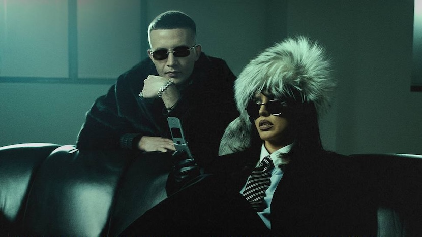

ICE / ARCHIVEНЕОФИЦИАЛЬНЫЙ САЙТ • 202605 / 08
ВИДЕОГРАФИЯ
Музыка
в кадре.
Раздел «Фильмография» адаптирован под музыкального исполнителя: здесь представлены клипы.
| Год | Название | Оригинальное название / исполнители | Изображение | Примечание |
|---|---|---|---|---|
| 2024 | Her Loss | Her Loss |  | Музыкальный клип Смотреть ↗ |
| 2025 | Зайти выйти | Зайти выйти | Музыкальный клип Смотреть ↗ | |
| 2025 | Банк | Банк — ICEGERGERT, Zivert |  | Музыкальный клип Смотреть ↗ |
Изображения и сведения: публикации The Flow по ссылкам в таблице. Просмотр видео требует интернета; у площадок могут быть ограничения доступа.